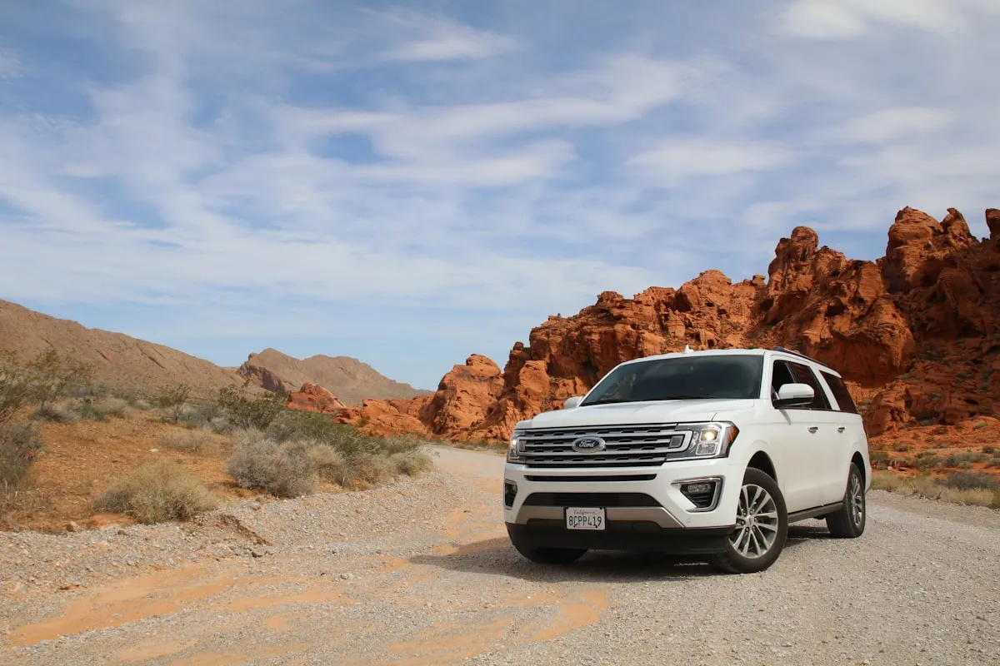

Michelin-Grade Dining in the Granite Deep.
Extraordinary seven-course banquets delivered to converted tin mines, coastal bunkers, and subterranean vaults across Cornwall.
We do not do white tablecloths in draughty hotel ballrooms. The Copper Cloche rigs off-grid kitchen infrastructure into disused West Country adits, former gun batteries, and sea-caves accessible only at low tide. Led by chef Jasper Vance, our crew brings oak-charcoal cookery, crystal stemware, and temperature-controlled comfort forty metres below the gorse. It is precise, quiet, and exceptionally well-fed dining for those who prefer their privacy carved out of four-hundred-million-year-old metamorphic rock.
Initiate Site ReconnaissanceThe Subterranean Manifesto: Cooking Below the Water Table
Setting a dining table in a Cornish tin adit requires considerably more than a few brass candleholders and a hamper of cold cuts. At forty metres down, ambient dampness sits at a constant ninety percent, and ambient temperature rarely strays past ten degrees Celsius. Most caterers view these conditions as an insurmountable health code violation. We view them as the world’s most stable natural larder. Every Copper Cloche banquet relies on custom-fabricated stainless ventilation trunks, mobile lithium battery arrays, and heavy-duty rigging gear capable of lowering cast-iron cookware down ninety-foot access shafts. Our charcoal is double-burnt Cornish oak, producing zero carbon monoxide smoke inside engineered air vaults. We haul in dry heat, porcelain plate-warmers, and vintage Bordeaux; we leave behind nothing but swept granite and clean air. The result is an eerie, beautiful silence broken only by the crackle of fat over embers and the clink of silverware against fine china.
Subterranean Banquet Engineering
Ventilation & Atmospheric Control
Air quality is our primary operational priority. We deploy custom-fabricated centrifugal air exchangers capable of cycling the atmospheric volume of a large coastal adit six times per hour. Cooking relies exclusively on double-burnt Cornish oak charcoal, tested rigorously to ensure zero carbon monoxide output within enclosed environments. Exhaust is drawn through high-grade filtration ducts directly to the surface, leaving the subterranean dining chamber pristine, scent-free, and perfectly breathable. Our technicians continuously monitor oxygen saturation and air flow throughout the duration of the seven-course service.
Deep-Rock Acoustics
Four-hundred-million-year-old granite provides an acoustic dampening effect that no modern concert hall can replicate. We offer curated live string quartets that resonate with eerie perfection against the metamorphic walls, or absolute, profound silence that amplifies the ritual of dining.
Depth Ratings
Our infrastructure allows for full culinary deployment at vertical depths of up to sixty metres below surface level. Winch systems and reinforced rigging transport all necessary goods.
Thermal Management
While the ambient rock temperature remains a constant ten degrees Celsius, our silent, directional heating arrays maintain the immediate guest zone at a crisp, comfortable twenty-one degrees Celsius.
Water Table Isolation
Proprietary dry-decking systems elevate the dining floor above seeping moisture, ensuring crystal stemware rests on perfectly level ground despite the rugged topography of coastal bunkers.
Logistics & Rigging
Site Reconnaissance
Every deployment begins with a meticulous geological survey. Our engineers assess structural integrity, tidal variations for sea-caves, and rock stability in former tin-mining adits. We do not proceed without rigorous sign-offs from independent geotechnical consultants, ensuring absolute safety before a single piece of crystal is packed.
Heavy Haulage Protocols
Transporting haute cuisine infrastructure requires serious machinery. Our retrofitted 1974 Bedford M-Type all-terrain truck navigates the most unforgiving Cornish cliff tops and sodden moorland. Industrial winches and custom-built steel cradles then lower our cast-iron stoves and lithium battery arrays into the depths.
Emergency Extraction
While incidents are exceptionally rare, our protocol is uncompromising. Dedicated extraction routes are mapped, and a fully equipped rapid response team remains on standby at the surface level throughout the entire duration of the seven-course service, guaranteeing immediate evacuation if necessary.

Credentials & Field Notes
Frequently Asked Questions
How do you manage claustrophobia or unease underground?
Our selected adits and vaults are surprisingly expansive, with high ceilings and wide clearances that mitigate any sense of confinement. Furthermore, our robust ventilation systems maintain a constant supply of fresh, moving air, and our warm, ambient lighting schemes are specifically designed to create a welcoming, secure environment rather than a dark enclosure.
Are there restroom facilities available during the banquet?
Absolutely. We deploy discreet, luxury portable sanitation units at a respectful distance from the main dining chamber within the subterranean network. These facilities are fully self-contained, temperature-controlled, and serviced continuously throughout the evening by our dedicated logistics team, ensuring complete comfort without disrupting the remote atmosphere.
What footwear is required for guests?
The terrain leading to the dining vault is often uneven and damp. We strictly require robust, flat-soled walking boots or sturdy outdoor footwear for the descent. High heels or delicate shoes are explicitly prohibited for safety reasons. Once seated on our dry-decking, the environment is perfectly stable and comfortable.
Can you accommodate severe dietary restrictions?
Yes. Despite the extreme logistical challenges of our off-grid kitchens, Chef Jasper Vance and his team execute highly bespoke menus. We require detailed notification of any allergies or dietary requirements during the initial booking phase, allowing us to source specialized ingredients and adjust our preparation protocols well in advance of the descent.
What happens in the event of extreme weather at coastal locations?
For adits and sea-caves exposed to tidal or severe storm conditions, we monitor meteorological data continuously. If conditions threaten structural safety or access routes, we implement an immediate cancellation or relocation protocol. The safety of our guests and crew supersedes all culinary considerations, and alternative arrangements are always discussed beforehand.
What are the minimum and maximum guest counts?
To ensure the economic viability of the heavy rigging and the intimacy of the experience, we require a minimum of eight guests per booking. Our current logistical ceiling, dictated by the spatial constraints of the safest available subterranean vaults, accommodates a maximum of thirty-six guests for a single, fully catered banquet.
Private Booking & Enquiries
Accessing the most remote dining rooms in Britain requires significant preparation. We operate on a minimum six-week lead time to allow for mandatory structural surveys, geotechnical sign-offs, and bespoke menu development. Pricing begins at £280 per head, exclusive of a variable site rigging fee determined by the complexity of the chosen subterranean location. To discuss availability and begin the reconnaissance process, please contact our logistics office directly.
Initiate Site Reconnaissance